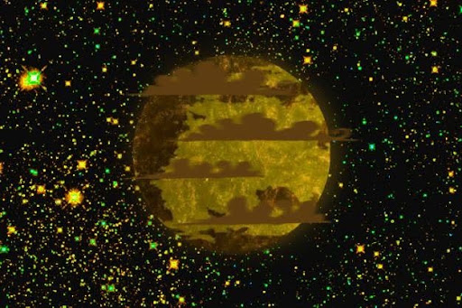

There is, in one rather unremarkable corner of the universe, a planet called Terra-04. It is a perfectly ordinary planet in almost every respect, which is to say that it is old, overcrowded, badly managed, and currently being maintained by a corporation that insists these things are unrelated. The planet itself has no particular reason to suspect that anything is wrong.
This is fortunate.
It is also completely incorrect.
=====>